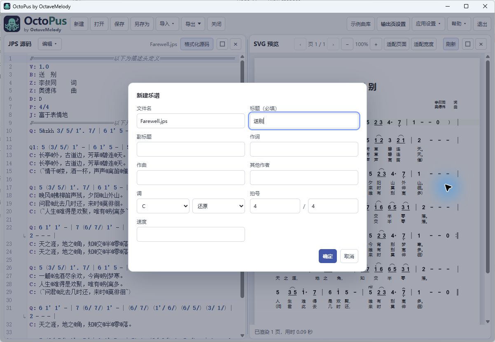
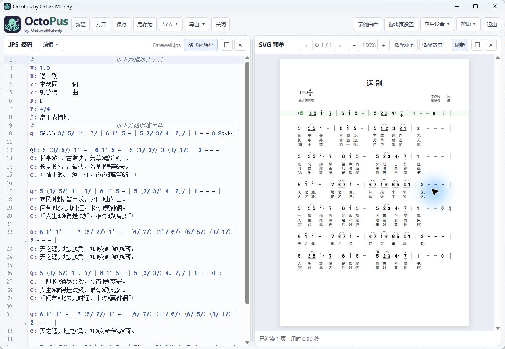

1. 简介
章鱼简谱是一款桌面简谱编辑器。用 JPS（Jianpu Script，简谱脚本）记录乐谱，可实时查看 SVG 预览、对照原稿图片或 PDF，并导出排版后的页面。JPS 源码记录音乐内容，页面设置控制排版。已安装版本可在“关于”窗口查看。本手册更新于 2026 年 11 月 1 日。
安装后，编辑、渲染和受支持的转录流程都在本地运行。帮助链接会在系统默认浏览器中打开，检查更新则需要网络。手册可离线阅读，中英文版的主题和示例一致。可使用每个主题页面上的语言链接切换，也可下载对应 PDF。
界面截图来自 Windows 版本；macOS 和 Linux 的菜单文字及系统字体可能不同。
安装并启动章鱼简谱
请从章鱼简谱官方发布页下载适合当前操作系统的安装包。安装包包含示例乐谱和离线文档。安装后，乐谱编辑、渲染和转录均可离线使用；检查更新需要网络连接。
| 平台 | 安装与启动 |
|---|---|
| Windows | 运行安装程序并按提示操作，或解压便携 ZIP 后启动 octopus.exe。便携版请保持整个文件夹完整。Windows 需要 WebView2，多数系统已自带。 |
| macOS（Apple Silicon） | 打开 DMG，将章鱼简谱拖入“应用程序”，然后从该文件夹启动。当前桌面包可能未签名或公证，Gatekeeper 可能会阻止启动。最新发布版的处理步骤请参阅快速上手中的 macOS 说明。 |
| Linux | 使用 AppImage 时，先为下载的文件添加可执行权限再运行。使用便携版时，请保持整个文件夹完整。Linux 需要 GTK/WebKit 运行库和 Poppler 工具。 |
启动程序后，可通过“帮助 → 快速上手”查看带界面截图的第一份乐谱教程。
2. 功能、限制与计划
| 现有功能 | 范围 |
|---|---|
| JPS 编辑 | 新建、打开、保存、撤销/重做、剪贴板、查找替换、源码格式化及内置示例。 |
| 实时 SVG 预览 | 源码与谱面对应、翻页、缩放及页面排版控制。 |
| 原稿转录 | 导入 PNG/JPG/JPEG/PDF，显示原稿并生成待校对的 JPS 草稿。 |
| 导出 | SVG、PDF、PNG、JPEG；内置本地引擎及按平台处理乐谱字体。 |
| 语言 | 中英文界面及用户手册。 |
当前限制。转录结果未必完整，请核对音符、变音、八度点、时值、歌词、连音线、倚音、跳房子及页序。页眉、页脚和页码采用保守过滤，特殊排版与跨页连线仍需人工检查。桌面版目前没有播放/MIDI 工作流、LilyPond 导出或 MusicXML 导入导出。五线谱识别尚属计划，不能替代简谱输入；程序也不会自动安装更新。macOS 原生打包仍未完成，Windows 和 macOS 的主机验收需单独进行，Linux 测试不能替代。
规划中的功能
- 提升转录质量，包括复杂记号及重复的页面附属文字。
- 导出 LilyPond 源码，以及导入、导出 MusicXML。
- 导出 MIDI。
- 导入五线谱并识别为 JPS。
- 以上是计划中的工作，目前尚无发布日期，也不属于现有功能。
3. 第一份乐谱
- 启动章鱼简谱，选择新建，输入标题及基本乐谱字段并确认。拍号的分子和分母为正整数，支持 12/8 等复拍子。
- 将源码替换为下面示例，或通过打开加载便携版 examples 目录中的示例乐谱。
- 等待 SVG 预览渲染完成。点击音符定位源码，修改文本并检查结果。
- 通过页面设置调整边距与字体，用另存为保存 .jps，再通过导出生成最终谱面。

V: 1.0
B: 第一份乐谱
Z: 练习示例
D: C
P: 4/4
J: 90
Q: 1 2 3 4 | 5 6 7 1' ||
C: 春 风 吹 来 花 儿 开 了该示例有两个小节，每小节四个音符；最后一个音符高一个八度。八个歌词汉字分别对应八个音符。
从示例曲谱入门
通过“打开”选择便携版 examples 目录中的 Farewell.jps，或下载下方摘录。先读描述头，再找到以 Q: 5 (3/ 5/) 开头的行。将源码光标放在 1'. 上，对照预览中的高音附点。只删改附点，比较结果，再撤销。然后在复制的歌词行中移动一个 @，观察哪个音失去唱词。需要保留练习时先另存为。下方可下载的摘录都包含原描述头，即使页面只展示主体行。
单声部旋律与两段歌词
通过“打开”加载 Farewell.jps（送别），或下载下方摘录。此处摘录第二行演唱旋律。逐一对照四个小节线、高音 1 的附点、低音 7 和两行歌词。下载摘录可单独练习该片段。
示例库：Farewell.jps · 源码行 17-19。 摘录采用 Linux 版本的应用字体集渲染，省略页面空白。 下载此 JPS 摘录
JPS 源码
Q: 5 (3/ 5/) 1'. 7/ | 6 1' 5 - | 5 (2/ 3/) 4. 7,/ | 1 - - - |
C: 晚风@拂柳笛声残，夕阳@山外山。
C: 问君@此去几时还，来时@莫徘徊。
4. 工作区与界面
顶栏包含新建、打开、保存、另存为、导入、导出、关闭、帮助、页面设置、应用设置和退出。应用设置集中管理 N1/N2 普通布局、T1/T2 转录布局、示例库显示、界面语言和界面字体。首次使用默认简体中文和平台默认字体，之后会记住你的选择。字体列表会标出默认项：Windows 使用 Microsoft YaHei，另有 SimSun；macOS 使用 PingFang SC，另有 Songti SC；Linux 使用内置 Noto Sans SC，另有 Liberation Sans。界面字体只影响控件和菜单，乐谱及导出字体仍由页面设置中的字体角色决定。

导入菜单提供 JPG / PNG / PDF 操作，转录使用内置的默认 OCR 配置。点击图标或品牌文字可打开项目主页。每个面板都有最大化、还原和关闭按钮；拖动面板间的边界可调整大小。
| 面板 | 用途 |
|---|---|
| JPS 源码 | 编辑文本。文件名及未保存标记位于右侧格式化源码按钮前；编辑工具位于 JPS 源码标题后。 |
| SVG 预览 | 显示渲染乐谱、适合/缩放/翻页控制及渲染诊断。 |
| 原稿图片/PDF | 显示原稿页及适合/缩放/旋转控制、转录菜单；在转录模式中可见。 |
面板较窄时，视图工具会收进视图（View）菜单，源码工具会收进编辑（Edit）菜单。SVG 视图提供适合页面、适合宽度、上一页和下一页；原稿视图提供适合、旋转，PDF 还可翻页。面板极窄时，也可从视图菜单缩放。相关操作仍显示在面板标题行。
5. 文件、保存与恢复
打开加载 .jps 乐谱。如果加载期间修改了当前乐谱或页面设置，程序会保留修改并提示你重试。支持纯 JPS 文本及兼容的 JSON 封装文档；封装可包含源码、页面设置和已有元数据。保存写入当前文档，新文档首次保存时需选择位置；另存为则更改保存位置。纯文本 JPS 可能无法保存页面设置，遇到这种情况时请按对话框提示改用封装格式。
关闭关闭乐谱，退出关闭程序。有未保存修改时，可选择保存、放弃或取消。程序中断后，恢复功能可还原最近可恢复的草稿和托管原稿，但不能替代常规备份。原稿图片/PDF 与乐谱源码分别保存，请保留原始文件。打开示例会创建工作文档；覆盖已有文件前，请先选择自己的保存位置。
使用打开重新打开已保存乐谱，或加载便携版 examples 目录中的示例。手册中可下载的摘录也可直接打开。
6. 编辑 JPS 源码
从标题行或折叠的编辑菜单使用撤销/重做、剪切/复制/粘贴、查找、替换及全选。查找打开搜索界面；替换显示替换控制。标准编辑器快捷键仍可用。剪贴板能力取决于操作系统。格式化源码调整音乐标记间距并保留记谱内容，不能纠正音乐错误或确认转录正确。修改后应仔细检查带引号的注释及紧附音符的倚音组。
手动选择 JPS 文本时，选区显示为蓝色；编辑器失去焦点时，颜色变淡。点击预览中的音符时，仍使用绿色标记显示对应的源码音符。
语法标点请使用半角 ASCII：冒号 :、双引号 "、逗号 ,、单引号 '、斜线 /。整行 # 注释可说明源码。不要将弯引号或全角冒号当作语法符号粘贴。附属记号应紧跟所属音符。大量替换前先备份，必要时使用撤销。
输入时会检查语法：行号栏符号和源码下划线提示错误或警告。选择行号栏标记可跳到对应范围。↳ 表示同一源代码行的折行续行，并非新的乐谱行。格式整理只作用于带冒号的有效音乐前缀；“Queen: some value”等描述文本保留原有空格。